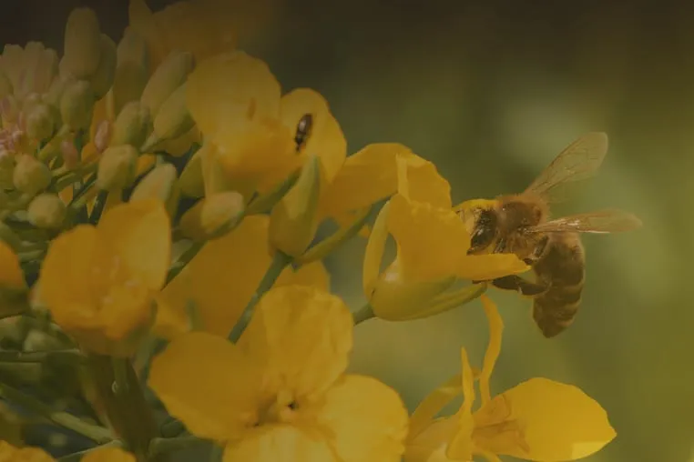
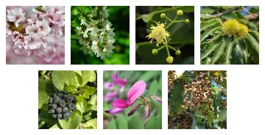

벚나무부터 헛개나무까지, 꿀벌 먹이 나무 7종 꽃 달력
4월 중순부터 7월 말까지 차례로 피는 밀원수, 국립수목원 자료로 본 꽃 색과 분포

스마트 양봉 기업 온팜(브랜드 비온팜)은 홈페이지 ‘밀원정보’에 밀원수(꿀벌의 먹이가 되는 나무) 7종을 소개한다. 이 나무들은 4월 중순 벚나무를 시작으로 7월 말 헛개나무까지 차례로 꽃을 피운다. 비온팜이 옮겨 실은 국립수목원 자료를 바탕으로 7종의 꽃 피는 때와 꽃 색, 분포를 개화 순서대로 정리했다.
비온팜은 2025년 소개서에서 2021년 8월 아까시·밤·벚나무를 대상으로 전국 밀원수 분포 지도 서비스를 시작했다고 밝혔다. 홈페이지 밀원정보는 지역을 골라 구글 지도에서 밀원수 분포를 찾아보는 ‘밀원수 분포’와 7종의 꽃·잎·열매 등을 소개하는 ‘밀원수 정보’로 나뉜다. 비온팜은 “밀원수 정보를 활용하여 꿀벌의 먹이를 확보하고, 꿀 생산량을 늘릴 수 있습니다”라고 설명했다.

사진: 나무의 꽃 피는 순서대로 위 줄 왼쪽부터 벚나무 꽃, 아까시나무 꽃, 피나무 꽃, 밤나무 밤송이, 아래 줄 왼쪽부터 황칠나무 열매, 삼색싸리 항목의 싸리꽃, 헛개나무 열매. 밀원정보에 실린 작은 사진 7장을 원래 크기대로 모았다 (자료: 비온팜)봄, 벚나무와 아까시나무
벚나무는 4월 중순부터 5월 초까지 연한 홍색 또는 거의 흰색인 꽃이 2~5개씩 모여 핀다. 중국과 일본에도 자라며 국내에서는 함경남북도 등을 제외한 전국에 분포한다. 높이 10~20m까지 크는 낙엽 활엽 교목(가을에 잎이 지는 넓은잎 큰키나무)으로 산 중턱 아래 계곡이나 산기슭처럼 흙이 깊고 기름진 곳에서 잘 자란다. 국립수목원 자료에 따르면 봄부터 여름 사이에는 가지치기를 하지 않는다. 이때 가지를 자르면 자른 자리로 수액이 많이 흘러나오고 병해충이 들어오는 통로가 되기 때문이다.
아까시나무는 흔히 ‘아카시아’로 불리며 5~6월에 꽃을 피운다. 길이 10~20cm 꽃차례(꽃이 가지에 붙어 늘어선 모양)에 줄지어 달리는 꽃은 젖빛이 도는 흰색(유백색)이고 밑부분에 누른빛이 돌며 향기가 강하다. 북아메리카 원산으로 추위와 염분, 공해에 강하고 척박한 땅에서도 잘 자란다. 높이 25m까지 큰다. 국립수목원 자료는 이 나무가 “1900년 초에 연료림으로 도입되어 황폐지 복구용 또는 연료림으로 전국에 식재되었다”며 베어 내도 새싹이 왕성하게 돋는 성질(맹아력) 탓에 다른 나무로 바꿔 심기 어렵다고 적었다.
초여름, 피나무·밤나무·황칠나무
피나무는 5월 말부터 7월 말까지 꽃을 피운다. 지름 15mm의 담황색(옅은 노란색) 꽃이 3~20개씩 모여 달리고 향기가 진하다. 꽃대 가운데에는 잎 모양 조각인 포가 길이 5cm로 길쭉하게 붙어 있다. 중국과 극동러시아, 국내 전국에 분포하며 계곡이나 산 중턱 아래의 흙이 깊고 기름진 곳에서 참나무류·다릅나무·박달나무류와 섞여 자란다. 높이는 20m에 이르지만 생장은 빠른 편이 아니다. 피나무속 씨앗은 씨눈(배)이 덜 자란 데다 씨껍질이 단단해 싹이 트기까지 1~3년이 걸린다.
밤나무는 6월에 흰 꽃을 피운다. 한 그루에 암꽃과 수꽃이 따로 피는 암수한그루다. 꼬리 모양 꽃차례는 새 가지 아랫부분의 잎겨드랑이에서 곧게 뻗고 꽃이 많이 달린다. 전국의 해발 100~1,100m에서 자라고 부여·공주 등 충남 지역과 하동·산청·광양·순창·임실 등 남부 지역에서 많이 재배된다. 높이 15m, 지름 1m까지 큰다. 가시 돋친 열매 껍질(밤송이)은 9~10월에 열매가 익으면 벌어진다.
황칠나무도 6월에 흰 꽃을 피운다. 꽃은 가지 끝에 우산 모양으로 모여 달리고 꽃잎과 수술이 5개씩이며 밀선반이라는 부분에 꿀샘이 있다. 7종 가운데 사철 잎이 푸른 상록수는 황칠나무뿐이다. 추위에는 약하지만 그늘과 바닷바람에 강하다. 남부 지방의 해변과 섬 지역 숲에서 자생하며 제주특별자치도에서는 해발 700m까지 분포하고 완도·거문도·대흑산도·어청도에서도 자란다. 국립수목원 자료에는 황칠나무가 “한국 특산식물”로 소개돼 있다. 나무껍질에서 나오는 노란 수액을 황칠이라 하고 이 수액이 묻으면 옻이 옮기 때문에 주의해야 한다는 내용도 담겼다.
여름, 삼색싸리와 헛개나무
삼색싸리는 6~7월에 길이 8~12mm의 홍자색(붉은 보랏빛) 꽃이 핀다. 이름처럼 꽃잎마다 색이 달라 위쪽 기꽃잎은 흰색, 양옆 날개꽃잎은 자색, 아래쪽 용골꽃잎은 홍색을 띤다. 한국 고유종으로 전라남도 산지와 경남 섬 지역에 분포한다. 높이 3m 정도인 낙엽 활엽 관목(밑동에서 줄기가 여럿 나는 작은키나무)이다. 그늘진 곳에서 자라고 척박한 땅에서도 잘 퍼지며 바닷가와 도시에서도 잘 자란다.
헛개나무는 7월 말에 꽃이 피어 7종 가운데 개화가 가장 늦다. 지름 7mm의 녹색 꽃이 모여 지름 4~6cm의 꽃차례를 이룬다. 국내에서는 전라남북도·경상북도·강원특별자치도·충청남도·경기도·황해도에, 해외에서는 태국·중국·일본에 분포한다. 높이는 10m, 지름은 30~40cm까지 자란다. 10월에 익는 지름 8mm의 열매는 열매자루가 울퉁불퉁하게 살찐다. 국립수목원 자료는 헛개나무가 “주독해소에 도움을 준다는 소문이 퍼져 수난을 당하고 있어 지속적인 보호,관리가 필요하다”고 적었다.
한눈에 보는 밀원수 7종
| 나무 | 꽃 피는 때 | 꽃 | 분포 |
|---|---|---|---|
| 벚나무 | 4월 중순~5월 초 | 연한 홍색 또는 거의 흰색 | 함경남북도 등을 제외한 전국, 중국·일본 |
| 아까시나무 | 5~6월 | 유백색(밑부분 누른빛), 향기가 강함 | 북아메리카 원산, 전국 식재 |
| 피나무 | 5월 말~7월 말 | 담황색, 향기가 진함 | 전국, 중국·극동러시아 |
| 밤나무 | 6월 | 흰색 | 전국(해발 100~1,100m) |
| 황칠나무 | 6월 | 흰색 | 남부 해변·섬 지역, 제주특별자치도(해발 700m까지) |
| 삼색싸리 | 6~7월 | 홍자색(기꽃잎 흰색·날개꽃잎 자색·용골꽃잎 홍색) | 전라남도 산지, 경남 섬 지역 |
| 헛개나무 | 7월 말 | 녹색 | 전라남북도·경상북도·강원특별자치도·충청남도·경기도·황해도, 태국·중국·일본 |
자료: 국립수목원 자료(비온팜 홈페이지 밀원정보 재인용, 2026년 10월 8일 확인), 비온팜 2025 소개서
저작권자 © 윙윙통신 무단 전재 및 재배포 금지